1. SE 423: Introduction to MechatronicsLecture 12: IMUMarius Juston
Monday, February 2nd, 2026
Lecture notes
This is the title slide for SE 423, Introduction to Mechatronics, Lecture 12: IMU, presented by Marius Juston on Monday, February 2nd, 2026. The University of Illinois Urbana-Champaign logo sits above the title on a dark blue background with faint hand-drawn math and engineering sketches.
An IMU, or inertial measurement unit, combines an accelerometer, a gyroscope, and often a magnetometer. Today you look at each sensor in turn, then read the IMU over SPI, building on last lecture. First comes a short partner review.
2. Review – 5-minute partner discussion
Talk to the person next to you and answer these review questions.
- To receive data, you must also ____ data.
- What is FIFO? Why is it used?
- What is the maximum size for the buffer’s data in bits?
- What does SPICHAR = 0xF mean?
- What do absolute / incremental encoders measure? When do they fail at measuring travel distance?
Lecture notes
This slide is a five-minute partner review. The heading reads "Review – 5-minute partner discussion," and the slide asks you to talk with the person next to you about five questions from the last lectures on SPI and encoders. First, fill in the blank: to receive data, you must also blank data. Second, what is FIFO, and why is it used? Third, what is the maximum size for the buffer's data in bits? Fourth, what does SPICHAR = 0xF (zero x F) mean? Fifth, what do absolute and incremental encoders measure, and when do they fail at measuring travel distance?
After discussing, check your answers. SPI is full duplex and the master generates the clock, so to receive data you must also transmit data. Each word you write out shifts a word in, even if what you send is a dummy value.
FIFO means first in, first out. It is a queue of up to 16 words on the F28379D SPI. It lets you send or receive several words with a single interrupt, which cuts CPU overhead and keeps a transaction's words in order.
Each SPI word is at most 16 bits. SPICHAR sets the character length as the number of bits minus one, so 0xF, which is 15, selects 16-bit words. A common mistake is reading 0xF as 15 bits.
An absolute encoder reports a unique angular position, which is known even at power-up. An incremental encoder counts quadrature pulses, so it measures change in position relative to where counting started. Both measure wheel rotation, not ground travel. Wheel slip, skidding, or a lifted wheel break the link between the two, and an incremental encoder can also miss counts if it spins too fast for the counter.
That failure is one motivation for today's topic, the IMU. After a quick look at reminders, you see how accelerometers and gyroscopes sense motion directly.
3. Reminders
Office Hours:
- Monday: 4-6 PM, Neel
- Tuesday: 11-1 PM, Lakshmi
- Tuesday: 1-3 PM, Samuel
- Tuesday: 2-5 PM, Dan & Marius
Lab: Starting Lab 4 this week. This a 2-week lab!
Homeworks:
- Check-offs for homework 3 Ex 1, 2, 3 & 4 are due March 10, 5PM (The end of office hours)
- Check-offs for homework 3 Ex 5 are due March 24, 5PM (The end of office hours)
- Answers and code submissions for homework 3 are due March 25, 9AM
Lecture notes
This slide lists course reminders in three groups: office hours, lab, and homework.
Office hours: Monday 4 to 6 PM with Neel; Tuesday 11 AM to 1 PM with Lakshmi; Tuesday 1 to 3 PM with Samuel; and Tuesday 2 to 5 PM with Dan and Marius.
Lab: you start Lab 4 this week. It is a two-week lab, so plan your time across both sessions.
Homework: each mention of homework 3 on the slide is a link to the assignment. Check-offs for homework 3 exercises 1, 2, 3 and 4 are due March 10 at 5 PM, the end of office hours. The check-off for exercise 5 is due March 24 at 5 PM, also the end of office hours. Written answers and code submissions for all of homework 3 are due March 25 at 9 AM.
Check-offs happen in person during office hours, so don't wait until the last session to get yours done. Next, we take a moment for questions about homework, lab, or LabVIEW.
4. Questions? (1/2)
Homework, Lab, LabVIEW?
Lecture notes
This slide is an open question break. It shows the word "Questions?" in large white letters on the dark blue Illinois background, with an orange accent line underneath and the prompt "Homework, Lab, LabVIEW?"
Take a moment to ask about anything from the reminders you just saw. That includes homework 3, starting the two-week Lab 4, or LabVIEW. If something is unclear, others likely share it.
After this, we briefly cover feedback-form responses, then begin today's topic: the accelerometer, the first sensor inside an IMU.
5. Thank you to everyone that responded to my feedback form!There was a lot of great feedback that I will try to incorporate!
Lecture notes
This slide shows a single message in large white text on the dark blue Illinois background, which has faint hand-drawn engineering sketches behind it: "Thank you to everyone that responded to my feedback form! There was a lot of great feedback that I will try to incorporate!"
Thank you for taking the time to share your thoughts. Your suggestions help shape how the rest of the course is taught, so please keep them coming. With that, we move into today's main topic, the IMU, starting with the accelerometer.
6. Accelerometer (1/8)
Lecture notes
This section title slide reads "Accelerometer" in large dark blue text on the orange Illinois background, with faint hand-drawn sketches of equations, a cube, a sphere and chemical structures behind it as decoration.
With the review and feedback done, you now start the core of Lecture 12, the IMU. An IMU combines three sensors: the accelerometer, the gyroscope and the magnetometer. You begin with the accelerometer and ask what you can measure when encoders are not available.
7. Accelerometer (2/8)
We cannot and should not rely on a single sensor source (sensor fusion will be covered later), and sometimes we cannot attach encoders.
So, what can we do?
The goal is to measure direction and rotation. What is the most basic component that we can measure?
Forces!
How do calculate velocity and position from forces?
Lecture notes
This slide motivates the accelerometer section with a short chain of questions. It says you cannot and should not rely on a single sensor source (sensor fusion comes later in the course), and sometimes you cannot attach encoders at all. It then asks, "So, what can we do?" The goal is to measure direction and rotation, so the slide asks what the most basic quantity is that we can measure. The answer, centered in the middle of the slide, is "Forces!" It ends by asking how we calculate velocity and position from forces.
Encoders on your robot's motors only tell you how far the wheels turned. If a wheel slips on the floor, or the robot is lifted or bumped, the encoders give you the wrong motion. On a drone or a walking robot there may be no wheels to put encoders on. A sensor that responds to the body's own motion gives you an independent second source of information.
To get from force to motion, start with Newton's second law, F = m*a, so a = F/m. If you know a proxy mass and can measure the force on it, you know acceleration. Integrate acceleration once to get velocity, v(t) = v_0 + integral of a dt. Integrate again to get position, x(t) = x_0 + integral of v dt. On the Red Board this becomes a discrete sum each sample period, for example v_(k+1) = v_k + a_k*dt.
Quick check: what happens to position if the acceleration reading has a small constant bias? Because you integrate twice, the error grows with time squared. This drift is one reason fusion is needed.
Next, you see how a MEMS chip actually measures that force using a spring-suspended mass and capacitors.
8. Accelerometer (3/8)
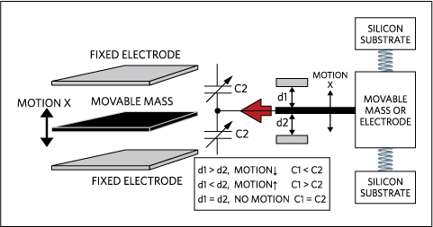
A MEMS (Micro-Electro-Mechanical Systems) accelerometer measure linear acceleration.
Accelerometers work like a weight suspended by springs. When the mass is moved you measure the displacement, the springs bring it back to the center.
In chips, we use the change of capacitors. The capacitance is based on the distance between the 2 materials. So, the smaller the distance, the larger the returned capacitance.
You then measure this capacitance.
Lecture notes
This slide answers the question from the last one: how do we measure force? With a MEMS accelerometer. MEMS stands for Micro-Electro-Mechanical Systems, tiny mechanical structures etched into silicon alongside the electronics. A MEMS accelerometer measures linear acceleration.
The idea is a weight suspended by springs. When the sensor accelerates, the mass lags behind and moves away from center, and the springs pull it back. If you measure how far it moved, you know how hard it was pushed.
On a chip, that displacement is measured with capacitors. The diagram on the right, from Analog Devices, shows a movable mass (drawn in black) sandwiched between an upper and a lower fixed electrode, free to move along the vertical X direction. Springs attach the mass to the silicon substrate above and below. The gap to the upper electrode is d1 and the gap to the lower electrode is d2, and each gap forms a variable capacitor, C1 and C2. The figure labels both capacitors C2, which is a typo; the top one is C1.
Capacitance grows as the gap shrinks: C = epsilon*A/d, capacitance equals permittivity times plate area divided by gap distance. The table in the figure spells it out. If d1 is greater than d2, the mass moved down and C1 is less than C2. If d1 is less than d2, the mass moved up and C1 is greater than C2. If d1 equals d2, there is no motion and C1 equals C2.
Quick check: if the mass moves toward the upper electrode, which capacitor gets larger? (C1.)
Source: https://www.analog.com/cn/resources/technical-articles/accelerometer-and-gyroscopes-sensors-operation-sensing-and-applications.html
Next, we use the difference between C1 and C2 to recover the displacement and its direction.
9. Accelerometer (4/8)
Force causes a displacement of the mass which, in turn, causes a capacitance change.
Placing multiple electrodes in parallel allows for a larger capacitance, which will be more easily detected.
By calculating the difference between and , we can derive the displacement of the mass and its direction.
Lecture notes
This slide is text only, with three statements that summarize how a MEMS accelerometer turns motion into an electrical signal. First, a force causes a displacement of the mass, and that displacement causes a capacitance change. Second, placing multiple electrodes in parallel gives a larger capacitance, which is easier to detect. Third, calculating the difference between C1 and C2 gives both the displacement of the mass and its direction.
This builds on the diagram from the previous slide: a proof mass sits between an upper and a lower fixed electrode, forming two capacitors. For parallel plates, C = epsilon*A/d, read as "capacitance equals permittivity times plate area divided by gap." A smaller gap gives a larger capacitance.
The parallel electrodes matter because capacitances in parallel add: C_total = C_a + C_b + ... A single finger gives only femtofarads, which is hard to measure. Many interleaved fingers give a total change large enough for the sensing circuit to read.
The difference measurement is called differential sensing. When the mass moves up, the upper gap d1 shrinks and the lower gap d2 grows, so C1 rises while C2 falls. The sign of C1 - C2 tells you the direction, and its size tells you how far the mass moved. Differential sensing also helps cancel effects that change both capacitors equally, such as temperature drift.
A common mistake is to think the chip measures acceleration directly. It measures capacitance, then infers displacement. The next slide shows how the spring law turns that displacement into acceleration.
10. Accelerometer (5/8)
Since we can measure the displacement and the system acts as a string we can do the following. We start with:
The force from a spring is:
Given that are known (design choices), and is measured from the capacitors, we get that:
Lecture notes
This slide turns the capacitance measurement from the previous slide into an acceleration value. The text says that because we can measure the displacement, and the mass-and-spring system behaves like a spring (the slide says "string," but it means spring), we can derive acceleration in a few steps.
First, Newton's second law: F = m*a, force equals mass times acceleration. Second, the force from a spring, Hooke's law: F = k*Δx, force equals the spring constant k times the displacement delta x. The mass m and spring stiffness k are known design choices fixed when the chip is fabricated. Delta x is measured from the difference between the two capacitors. Setting the two forces equal gives m*a = k*Δx. Solving for acceleration gives a = (k/m)*Δx: acceleration equals k over m times the displacement.
So the accelerometer is really a displacement sensor with a known scale factor, k/m. This relationship holds when the proof mass has settled, meaning the acceleration changes slowly compared with the natural frequency sqrt(k/m) of the mass-spring system.
The ratio k/m also sets a design trade-off. A softer spring or a heavier mass moves farther per g, which gives better sensitivity. However, it lowers the bandwidth and lets the mass hit its limits sooner.
Quick check: if you double the spring stiffness, what happens to the displacement for the same acceleration? It halves.
Next, you see how designers stack many of these comb capacitors to reduce noise, and how many axes a chip can measure.
11. Accelerometer (6/8)
You keep stacking these to remove the noise to get more accurate readings. In turn we get the following internal system. It is incredible how small these are!
How many axis can the following accelerometers measure?
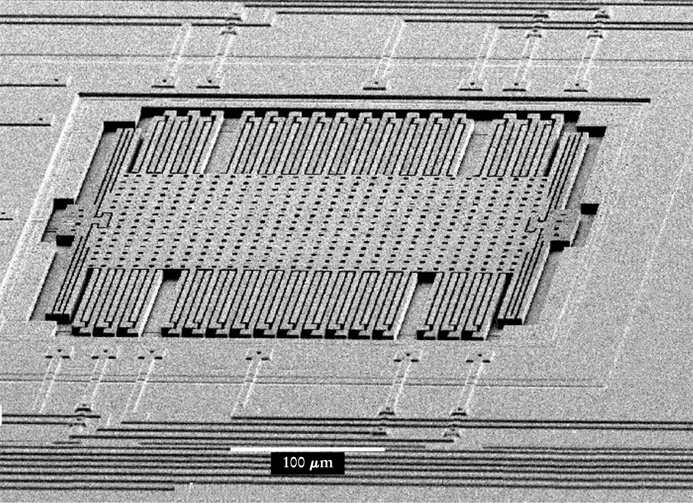
https://physicstoday.aip.org/features/the-little-machines-that-are-making-it-big
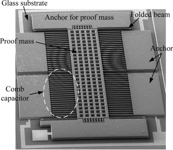
https://www.sciencedirect.com/science/article/pii/S0924424716300267
![Diagram: MEMS capacitive accelerometer on a silicon substrate. A central movable mass hangs from suspension beams attached to four corner anchors. Comb-like moving electrodes extend from both sides of the mass and interleave with fixed electrodes connected to capacitance-sensing blocks on the left and right. When acceleration shifts the mass sideways, the gaps between moving and fixed electrodes change, changing the measured capacitance. The electrodes are arranged to sense motion along the left-right axis.](L12_files/e0b90334baa3.png)
Lecture notes
This slide moves from the idealized spring-and-capacitor model to what real MEMS accelerometers look like. The text says that you keep stacking these electrode pairs to remove noise and get more accurate readings, that this gives the internal structure shown, and that these devices are incredibly small. It then asks: how many axes can the following accelerometers measure?
There are three images. On the left is a labeled diagram on a silicon substrate. A central movable mass hangs from suspension beams attached to four corner anchors. Moving electrodes extend from both sides of the mass and interleave with fixed electrodes, which connect to capacitance-sensing blocks on the left and right. In the middle is an electron micrograph of a real device on a glass substrate. A long perforated proof mass is held by folded beams to an anchor, and comb capacitors run down both sides. On the right is another micrograph with a 100 micrometer scale bar. It shows a perforated proof mass about 350 micrometers wide, suspended by folded springs, with rows of comb fingers along its top and bottom edges.
Why stack fingers? Each finger pair adds a small capacitance. Hundreds of pairs in parallel give a much larger total change for the same displacement x. A larger signal stands out above electrical noise, and a larger signal from the same tiny motion means a more accurate estimate of a = k*x/m.
To answer the question, look at the finger orientation. In all three devices the fingers run in the same direction, so each one senses motion along a single in-plane axis. Each is a one-axis accelerometer.
On the next slide you see how a single chip combines separate x, y, and z sensors to measure all three axes.
12. Accelerometer (7/8)
![Electron micrographs of a single-chip three-axis MEMS accelerometer. (a) The whole chip, about 1 millimeter scale, holding separate z-, x- and y-axis sensors beside on-chip sensing circuits. (b) Close-up of an in-plane sensor, 300 micrometer scale: a perforated proof mass suspended by springs and surrounded by interleaved comb fingers, with a shock-stop beam that limits travel under excessive acceleration and self-test comb fingers. (c) The z-axis sensor, 500 micrometer scale: a perforated suspended plate with two solid square masses that moves out of plane.](L12_files/bfe41ab6e3b9.png)
Think of the z-axis as a trampoline!
What happens if you have too large of an acceleration (think of the combs)?
An accelerometer that is sitting still on a desk reads _g pointing upwards.
What if it gets dropped out of the window in a perfect vacuum?
https://www.mdpi.com/2504-3900/1/4/337
Lecture notes
This slide shows three electron micrographs of a single-chip, three-axis MEMS accelerometer, from the MDPI paper linked at the bottom (https://www.mdpi.com/2504-3900/1/4/337). The left image, at a 1 millimeter scale, shows the whole chip with separate z-axis, x-axis and y-axis sensors next to the on-chip sensing circuits. The middle image, at a 300 micrometer scale, zooms in on an in-plane sensor: a perforated proof mass on springs, surrounded by comb fingers, with a labeled shock-stop beam and self-test comb fingers. The right image, at a 500 micrometer scale, shows the z-axis sensor, a suspended perforated plate carrying two solid square masses.
Last slide showed that in-plane combs sense x and y. For z, think of a trampoline. The plate flexes up and down out of the chip plane, and the capacitance between the plate and the substrate below it changes with the gap.
What happens under too large an acceleration? The proof mass could travel far enough for the comb fingers to crash into each other, stick, or break. The shock-stop beam is a mechanical limit that prevents this. Electrically, the reading also saturates at the sensor's full-scale range. The self-test fingers apply an electrostatic force so the chip can check that the mass actually moves.
Now the blank on the slide. Sitting still on a desk, the accelerometer reads 1 g pointing upward. It measures specific force: the desk pushes up on the chip, and gravity alone does not register. Dropped in a perfect vacuum, it is in free fall, the proof mass floats with the frame, and it reads 0 g. Keep this in mind when you use accelerometer data to estimate tilt on the robot.
Next, a short animation ties these pieces together.
13. Accelerometer (8/8)
YouTube video: How does an Accelerometer work? | 3D Animation (CircuitBread)
Lecture notes
This slide plays a short YouTube video from CircuitBread, "How does an Accelerometer work? | 3D Animation." The thumbnail shows a 3D model of a MEMS sensor: an orange proof mass on thin springs, its comb fingers interleaved with fixed blue electrodes, under the caption "Accelerometers and Gyroscopes."
As you watch, connect the animation to the electron micrographs from the last two slides: acceleration shifts the mass, the finger gaps change, and the capacitance change becomes the reading. The video also introduces gyroscopes, which come next.
14. Gyroscope (1/9)
Lecture notes
This is a section title slide that reads "Gyroscope" in dark blue on the orange Illinois background. Faint hand-drawn sketches of equations, a cube, a sphere and chemical structures are decoration only, with the Illinois logo in the corner.
You have just seen how a MEMS accelerometer measures linear acceleration with a spring-suspended proof mass. Next, you move to the gyroscope, the second IMU sensor, which measures angular rate. Ask yourself as you go: what motion can an accelerometer not capture?
15. Gyroscope (2/9)
The accelerometer measures linear acceleration, which allows us to measure acceleration, velocity and displacement.
How many degrees of freedom are there in 3D?
How many does the accelerometer handle?
3:
We are missing the angular DOF!
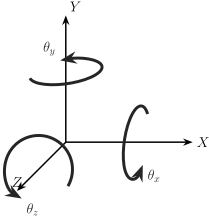
Lecture notes
This slide motivates the gyroscope by asking what the accelerometer leaves out. The text recaps that the accelerometer measures linear acceleration, which lets us get acceleration, velocity and displacement. It then asks two questions. First, how many degrees of freedom are there in 3D? The answer is six: (x, y, z, theta_x, theta_y, theta_z), read as three positions x, y and z plus three rotation angles theta x, theta y and theta z. Second, how many does the accelerometer handle? The answer is 3: (x, y, z). The slide concludes, "We are missing the angular DOF!"
On the right is a coordinate frame. X points right, Y points up, and Z points out toward you. A curved arrow circles each axis to mark rotation about it: theta_x about X, theta_y about Y, and theta_z about Z, each following the right-hand rule.
A degree of freedom is one independent way a rigid body can move. A free body in 3D can translate along three axes and rotate about three axes. The accelerometer only senses the translational part directly. Velocity and displacement come from integrating its output once and twice, and small errors grow quickly when you integrate. To know how the body is turning, you need a different sensor, and that sensor is the gyroscope.
A common mistake is to think a gyroscope reports angle. It actually measures angular velocity, the rate of rotation about each axis, for example in degrees per second. You integrate that rate over time to estimate angle. On the robot, integrating the gyro z-rate is how you track heading, or yaw.
Next, you see how a MEMS gyroscope senses rotation without a spinning wheel.
16. Gyroscope (3/9)
A MEMS Gyroscope does not use a spinning wheel like classical mechanical gyroscopes. Similarly, you have a tiny mass that is moving when rotating. If the device start rotating, the moving mass experiences a sideways force.
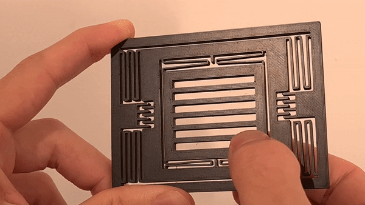
https://www.reddit.com/r/3Dprinting/comments/103v6ef/1001_3d_printed_mems_gyroscope/
Lecture notes
This slide answers the question from the previous slide: if the accelerometer only covers the three linear degrees of freedom, how do you measure the three angular ones? The answer is a gyroscope, and specifically a MEMS gyroscope. MEMS stands for micro-electro-mechanical systems: tiny mechanical structures etched into silicon alongside electronics.
The slide text says that a MEMS gyroscope does not use a spinning wheel like a classical mechanical gyroscope. Instead it has a tiny mass that is kept moving, and if the device starts rotating, that moving mass experiences a sideways force.
The photo shows a hand holding a large 3D-printed model of a MEMS gyroscope, credited to a Reddit 3D-printing post (link on the slide). The parts are:
1. A slotted rectangular proof mass sits in the centre.
2. A square frame surrounds it, connected by thin serpentine springs.
3. The frame hangs from the outer border on more folded springs.
4. A finger pushes the mass to show it can oscillate along one axis, while the second set of springs lets it shift sideways.
The key idea is that rotation alone does nothing to a stationary mass. The mass must already be moving. Rotation then deflects it sideways through the Coriolis effect, with a force of magnitude about 2*m*Omega*v. In words, the force is two times mass times angular rate times the mass's velocity.
A common misconception is that a MEMS gyroscope measures angle. It measures angular velocity. You get angle only by integrating, and integration drifts.
Next, you see how that sideways displacement is sensed with capacitor plates, just like in the accelerometer.
17. Gyroscope (4/9)
Very similar to accelerometers,
The mass sits between capacitors plates.
When the it moves sideways, capacitance changes.
This returns a displacement from which we can compute angular velocity.
Lecture notes
This slide is text only, with no figure. It makes four short points: a MEMS gyroscope is very similar to an accelerometer, the mass sits between capacitor plates, when the mass moves sideways the capacitance changes, and that change gives a displacement from which we compute angular velocity.
The key idea is that you already know the sensing half of a gyroscope. In the accelerometer slides, a proof mass on springs shifts, and the gap between it and fixed comb-like electrodes changes. Capacitance depends on that gap, roughly C = epsilon*A/d (capacitance equals permittivity times plate area divided by gap distance). A smaller gap on one side and a larger gap on the other gives a capacitance difference that the chip's circuitry converts to a displacement.
The gyroscope reuses exactly this readout. What differs is why the mass moves. On the previous slide you saw that a moving mass in a rotating device experiences a sideways force. The capacitors measure that sideways shift, and because the shift depends on how fast the device is rotating, you can work back to angular velocity.
A common mistake is to think the gyroscope measures angle directly. It measures angular rate, in degrees or radians per second. To get an angle on the robot, you integrate the rate over time, and any small bias accumulates as drift.
Next, we look at the two axes of the device, the drive axis and the sense axis, and at where that sideways force comes from: the Coriolis force.
18. Gyroscope (5/9)
The device shown has 2 axis, the Drive Axis (x) and the Sense Axis (y).
The inner mass is electrically forced to vibrate continuously back and force along the x-axis at a resonant frequency . The instantaneous velocity is .
When an angular velocity , along the z-axis, is applied, the Coriolis force acting along the y-axis is generated.
https://www.reddit.com/r/3Dprinting/comments/103v6ef/1001_3d_printed_mems_gyroscope/
Lecture notes
This slide puts numbers and directions on the sideways force from the last two slides. On the left, the text says the device has two axes: the drive axis, x, and the sense axis, y. The inner mass is electrically forced to vibrate continuously back and forth along x at its resonant frequency, omega_r, with instantaneous velocity v. When an angular velocity Omega_z is applied about the z-axis, which points out of the chip, a Coriolis force appears along the y-axis. The slide's equation reads "F sub C equals negative two m times the cross product of Omega z and v," written F_C = -2m(Omega_z × v). On the right is the same 3D-printed MEMS gyroscope model as before: a slotted proof mass on serpentine springs inside a frame, which is itself suspended by more springs.
Work through the cross product. Omega points along z and v points along x. Since z × x = y, the force lies along y with magnitude 2*m*Omega_z*v. That is why the second set of springs lets the mass shift sideways: the sense springs and the capacitor plates from the previous slide measure that y displacement.
The mass is driven at resonance so that v is as large as possible for little drive energy. A larger v gives a larger Coriolis force and a stronger signal. Because v reverses every half cycle, the sense motion also oscillates at omega_r. Its amplitude is proportional to Omega_z.
A common mistake is to think a gyro measures angle. It measures angular rate, and you have to integrate it to get heading.
Next, we balance this force against the spring stiffness to solve for Omega_z.
19. Gyroscope (6/9)
The Coriolis force pushes the mass along the y-axis.
Thus, to solve for angular velocity we again derive that:
We know the mass , spring stiffness , drive velocity , so we just compute the displacement to measure .
Very similar to the accelerometer!
Lecture notes
This slide finishes the gyroscope derivation from the previous slide. There, the proof mass vibrates along the drive axis, x, and a rotation about z produces a Coriolis force along the sense axis, y. Here the slide states that the Coriolis force pushes the mass along the y-axis and then gives two equations.
The first equation is F = k*Δy = -2m*(Ω_z × v). In words: the spring force, stiffness k times the sideways displacement delta y, balances the Coriolis force, minus two times the mass times the cross product of the angular velocity omega z with the drive velocity v. Because Ω_z points along z and v points along x, they are perpendicular. The magnitude of the cross product is therefore simply Ω_z times v, and its direction is along y. The minus sign only sets which way the mass deflects.
Solving for the rate gives the second equation: Ω_z = k*Δy / (2*m*v). In words: omega z equals k times delta y, divided by two times m times v.
The slide's point is that m and k are fixed by the design, and v is set by the drive electronics. Only Δy is unknown, and we read it from the capacitance change between the plates, just as we did for the accelerometer. The accelerometer balances k*Δx = m*a. The gyroscope balances k*Δy against the Coriolis force. So it is the same spring, mass and capacitor sensing, with a different force.
One subtlety the slide skips: v oscillates back and forth, so Δy also oscillates at the drive frequency. The chip demodulates this signal to recover Ω_z.
Quick check: if the robot is not rotating, what is Δy? (Zero.) Next, you see a real nested-frame MEMS layout with drive and sense combs.
20. Gyroscope (7/9)
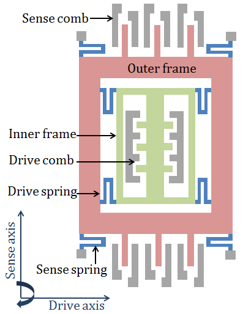
https://www.reddit.com/r/3Dprinting/comments/103v6ef/1001_3d_printed_mems_gyroscope/
Lecture notes
This slide puts the gyroscope we just analyzed on paper next to a model you can hold. On the left is a schematic of a MEMS vibratory gyroscope, from the Patel and McCluskey modeling paper linked below it. A green inner frame sits inside a red outer frame and is held there by four blue drive springs. Drive combs, interlocking comb fingers, push the inner frame back and forth along the horizontal drive axis. The outer frame is anchored at its corners by blue sense springs and carries gray sense combs along its top and bottom edges. In the lower left corner, the axes show the drive axis horizontal and the sense axis vertical, with a curved arrow for rotation about the axis pointing out of the chip.
On the right is a photo of the 3D-printed version from the Reddit post linked below it. A finger pushes the slotted center mass, and you can see the serpentine flexures that let it move.
The key idea is the nested frames. The drive springs let the inner frame move only in x relative to the outer frame. The sense springs let the outer frame move only in y relative to the anchor.
When the chip rotates, the Coriolis force pushes the vibrating mass in y. Because the drive springs are stiff in y, they carry that force to the outer frame, so the outer frame moves sideways. The sense combs measure that displacement as a change in capacitance. From there you use last slide's relation: Omega = k*y / (2*m*v), read as "angular rate equals spring stiffness times displacement, divided by two times the mass times the drive velocity."
Separating the two motions keeps the large drive vibration from swamping the tiny sense signal.
Next, we'll see how real chips like the MPU6050 arrange several masses to sense all three axes.
21. Gyroscope (8/9)
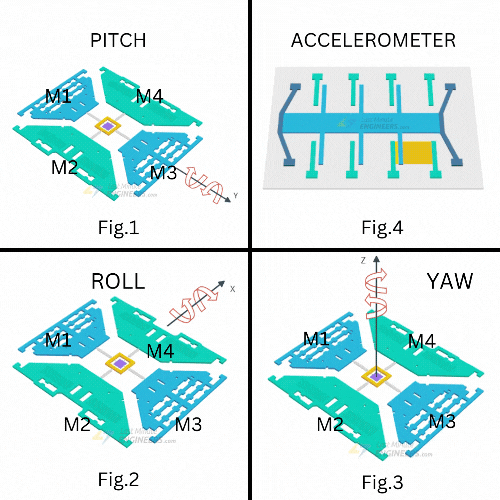
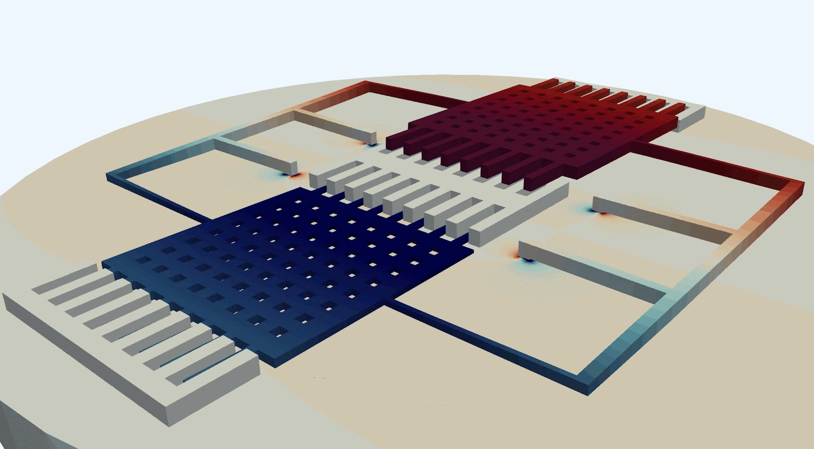
https://quanscient.com/blog/enhancing-mems-gyroscope-design
Lecture notes
On slide 20 you saw a single proof mass in nested frames. This slide shows how real MEMS gyroscopes are laid out.
On the left is a simulation from Quanscient of a MEMS gyroscope. Two perforated proof masses sit side by side, one colored red and one blue, to show that they move in opposite directions. This is called antiphase, or tuning-fork, motion. Each mass has comb fingers interleaved with fixed comb electrodes, which both drive the vibration electrostatically and sense displacement as a change in capacitance. A thin frame anchored to the substrate links the two masses. When the chip rotates, the Coriolis force deflects the two vibrating masses in opposite directions, because their velocities are opposite. A linear acceleration, by contrast, pushes both masses the same way. Subtracting the two sense signals therefore keeps the rotation and cancels most of the acceleration. That is the main reason designers use two masses instead of one.
On the right is a four-panel figure of the MPU6050, the IMU from the Arduino forum guide. Figures 1 to 3 show its gyroscope: four proof masses, labeled M1 to M4, arranged around a central anchor. Rotation about the Y axis (pitch, Fig. 1), the X axis (roll, Fig. 2), and the Z axis (yaw, Fig. 3) each deflects a different pair of masses. That lets one structure measure all three angular rates. Fig. 4 shows the accelerometer for comparison: a single proof mass on springs, with comb-finger electrodes, just like the accelerometer slides earlier.
Keep these shapes in mind. On the next slide you will look at a real IMU die and decide which structures are gyros and which are accelerometers.
22. Gyroscope (9/9)

https://www.printables.com/model/413667-mems-model-six-axis-imu-device
What is this? The gyros or accelerometers?
What is this? The gyros or accelerometers?
Lecture notes
This slide is a scanning electron microscope image of a real six-axis IMU die with its protective cap removed. The image is labeled "MEMS_Accel_Bottom" and taken at 115 times magnification, with a field width of 2.85 millimeters and an 800 micrometer scale bar. The whole sensing area is roughly the size of a pinhead. Two red boxes divide the die. The top box holds two small square structures, each a central mass on folded springs, plus a rectangular structure at the upper right that appears partly damaged. The bottom box holds three large rectangular structures: two with nested, symmetric frames, and one with a large dark proof mass flanked above and below by dense comb-finger arrays. Each box is labeled with the same question: "What is this? The gyros or accelerometers?" The source is the Printables MEMS model link on the slide.
Take a moment and decide before reading on. Use what you saw on the last few slides.
The likely answer is that the top row holds the accelerometers and the bottom row holds the gyroscopes. An accelerometer only needs a proof mass on springs, with combs that sense how far it moves, so it can be small. A gyroscope must keep its mass vibrating at resonance and then detect the tiny Coriolis motion. That needs drive combs, sense combs and nested frames, like the schematic on slide 20, so gyros take up much more area. The structure at the upper right may be a seesaw-style accelerometer for the out-of-plane (z) axis.
That gives us six axes: three for acceleration and three for rotation rate. Neither measures a heading, which is why the magnetometer comes next.
23. Magnetometer (1/4)
Lecture notes
This section slide reads "Magnetometer" in dark blue on the orange Illinois background. Faint chalk-style sketches of equations and diagrams decorate it, and none of them is part of the content.
You have now seen how MEMS accelerometers sense linear acceleration and how gyroscopes sense angular rate. Integrating a gyroscope's rate to get heading slowly drifts, so the IMU needs an absolute reference for direction. The magnetometer is the third sensor that provides it. The next slide starts with a familiar device that sailors have used for centuries.
24. Magnetometer (2/4)
What is a device that has been used for traveling for a very long time? That has helped sailors travel?
The compass!
The magnetometer acts as an absolute reference. It measures the strength and direction of the Earth’s magnetic field, allowing the system to establish a global “North”
The more popular method uses the Hall Effect sensor to measure the magnetic field; however, next slide is a slightly different, method, and was chosen since it is more like the previous accelerometer and gyroscope sensors. Although they measure the same thing in the end!
Lecture notes
This slide introduces the third sensor in the IMU, the magnetometer. It is text only, with no figures. It opens with a question: what device has helped sailors travel for a very long time? The answer, centered on the slide, is the compass. Pause here and let the class answer before revealing it.
The slide then defines the magnetometer as an absolute reference. It measures the strength and direction of the Earth's magnetic field, which lets the system establish a global "North." This is why it matters for the robot. The gyroscope you just studied measures angular rate, so you integrate it to get heading, and any small bias makes that heading drift over time. The accelerometer gives an absolute reference for down, from gravity, but it cannot tell you which way you are facing about the vertical axis. The magnetometer fills that gap by giving an absolute heading that does not drift. Later in the lecture you combine all three in the IMU.
The slide notes that the most popular way to sense the field is the Hall effect sensor. In a Hall sensor, current flowing through a conductor in a magnetic field produces a small voltage across it. The next slides instead show a MEMS magnetometer that uses mechanical torque and capacitive sensing. This method was chosen because it works like the accelerometer and gyroscope structures you have already seen. Both approaches measure the same field in the end.
A common mistake is to trust the magnetometer blindly. Motors, steel and current-carrying wires near the sensor distort the local field. Also, magnetic north is not exactly true north.
25. Magnetometer (3/4)
The magnetic field acts like a counterbalance and you measure the torque
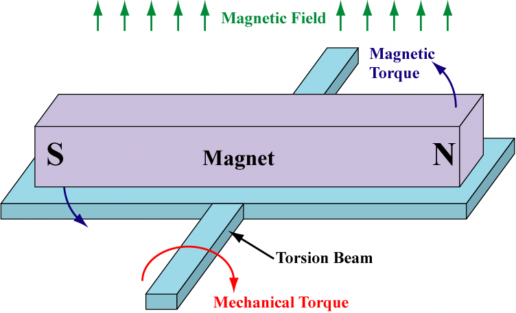
Lecture notes
This slide shows one way a MEMS magnetometer can turn a magnetic field into something measurable. The headline reads: "The magnetic field acts like a counterbalance and you measure the torque."
The diagram shows a bar magnet, south pole on the left and north pole on the right, mounted on a flat plate. A thin torsion beam runs under the plate, perpendicular to the magnet's length, and holds it up. Green arrows across the top show an external magnetic field pointing straight up. Curved blue arrows labeled "Magnetic Torque" show the field trying to rotate the magnet, tipping the north end up and the south end down so the magnet lines up with the field, just like a compass needle. A red curved arrow on the torsion beam, labeled "Mechanical Torque," shows the twisted beam pushing back. The figure is credited to the ResearchGate link at the bottom of the slide.
The physics is a torque balance. The magnetic torque is tau_mag = m x B, the cross product of the magnet's moment and the field. Its size is m*B*sin(phi), where phi is the angle between them. The beam acts as a torsional spring with restoring torque tau_beam = k*theta, where theta is the twist angle. At equilibrium the two torques are equal, so m*B*sin(phi) = k*theta. For small twists, theta is proportional to B, and measuring the twist, typically capacitively, gives you the field strength along that axis.
Notice the pattern from earlier in the lecture. The accelerometer balances an inertial force against a spring, and the gyroscope senses Coriolis deflection. Here the spring balances a magnetic torque instead.
On your robot, remember that motors, magnets and steel nearby also produce fields, which distort the reading.
Next, you see a Lorentz-force version that uses a current-carrying coil instead of a permanent magnet.
26. Magnetometer (4/4)
https://www.mdpi.com/1424-8220/9/9/6951
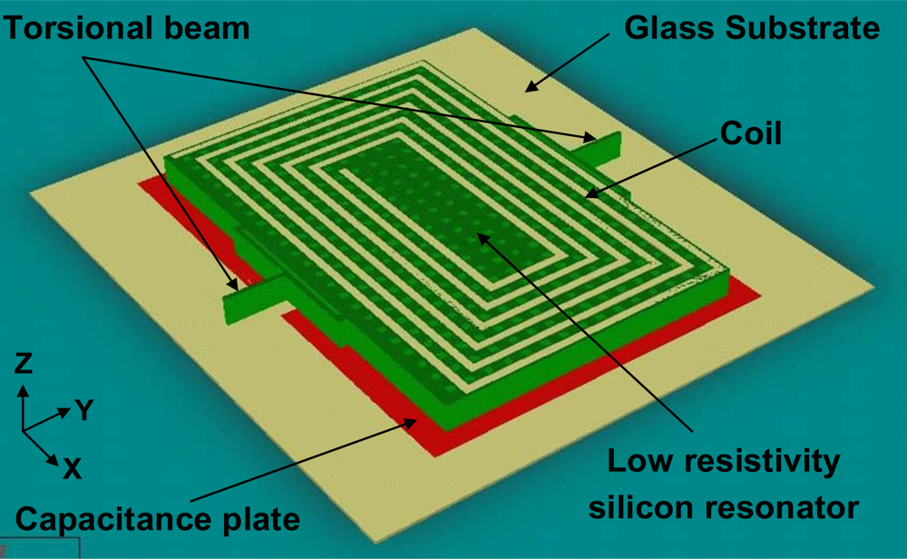
![Scanning electron micrograph of a MEMS magnetometer chip, about 2 millimeters across (scale bar 1 millimeter, 60x magnification). A central perforated rectangular plate carries a planar spiral coil of about ten turns. The plate is suspended at its left and right edges by short beams anchored to the frame, with rectangular structures on each side and gold wire bonds at the corners carrying current and signals. Current in the coil interacts with an external magnetic field, producing a force that deflects the plate.](L12_files/f4343d979a43.png)
Lecture notes
This slide shows a second MEMS magnetometer design. Instead of a permanent magnet, this one uses a current-carrying coil. The image source is https://www.mdpi.com/1424-8220/9/9/6951.
On the left is a labeled 3D model. A rectangular plate, labeled "low resistivity silicon resonator," has a flat spiral coil on its top surface. Two "torsional beams" on opposite sides hold the plate up, so it can rock about the axis through the beams. Underneath is a red "capacitance plate" on a "glass substrate." X, Y, and Z axes are marked in the lower left.
On the right is a scanning electron microscope image of the real chip. The scale bar reads 1 millimeter, and the image is at 60x magnification. You can see a perforated central plate with about ten spiral coil turns, short beams on the left and right edges, and wire bonds at the corners.
Here is how it works. You push current through the coil. A current in a magnetic field feels the Lorentz force, F = I*L x B, read "force equals current times length cross magnetic field." On opposite sides of the spiral the current flows in opposite directions, so the forces push one side up and the other side down. That produces a torque that twists the plate about the torsional beams. The current is typically driven at the plate's resonant frequency, so a small force builds up into a measurable motion.
As the plate tilts, its gap to the capacitance plate changes, and so does the capacitance, C = epsilon*A/d. The electronics read this out the same way they do for the accelerometer and gyroscope. The idea is the same as on the previous slide: field in, torque on a suspended structure, measured deflection out.
Quick check: what happens to the output if you turn the coil current off? Next, we package all three sensors together into an IMU.
27. IMU (1/14)
Lecture notes
This is a section title slide with the single word "IMU" in large dark blue letters on the orange Illinois background. Faint decorative sketches of equations, a cube and molecules fill the edges, and they carry no content.
You have now seen the three sensing principles separately: the accelerometer, the gyroscope and the magnetometer. This section puts them together in one package, the inertial measurement unit. Next, you see what an IMU contains and meet the MPU-9250, the IMU on your robot.
28. IMU (2/14)
IMU – stands for Inertial Measurement Unit
Which is just a single chip that packages 3-axis accelerometers, 3-axis gyroscopes and a 3-axis magnetometer (sometimes).
Sometimes includes additional noise filtering, sensor fusion.
Allows to collect all the information about the robot’s inertial state.
Lecture notes
This slide is text only, under the title IMU. It defines IMU as Inertial Measurement Unit: a single chip that packages a 3-axis accelerometer, a 3-axis gyroscope, and sometimes a 3-axis magnetometer. Some IMUs also include onboard noise filtering and sensor fusion. Together, these sensors let you collect the information about the robot's inertial state.
Over the last several slides you saw each sensor on its own: the MEMS accelerometer, the MEMS gyroscope, and the Lorentz-force magnetometer. An IMU puts all of them in one package with a shared, aligned set of x, y and z axes. A chip with only an accelerometer and gyroscope is often called a 6-axis or 6-DOF IMU. Adding a magnetometer makes it a 9-axis IMU.
Sensor fusion means combining measurements from several sensors to get a better estimate than any one gives alone. The gyroscope is smooth over short times but drifts when you integrate it. The accelerometer gives a drift-free tilt reference from gravity but is noisy and disturbed by motion. The magnetometer gives a heading reference but is sensitive to nearby motors and steel. Fusing them plays each sensor's strength against the others' weaknesses. Some chips do this fusion internally, while others hand you raw data and you do it on the microcontroller.
A common misconception is that an IMU directly tells you position. It does not. It measures specific force (acceleration including gravity), angular rate, and magnetic field. Velocity and position come only by integration, and errors grow over time.
Quick check: which sensor would you trust for heading over a few seconds, and which over a few minutes?
Next, you meet the specific IMU on the robot, the MPU-9250.
29. IMU (3/14)
We will specially be using the MPU-9250. This specifically contains a 3-axis accelerometer, 3-axis gyroscope and a 3-axis magnetometer.
There are multiple sensitivity levels that you can set the sensors:
- Gyroscope: ±250, ±500, ±1000, and ±2000 dps (degrees per second)
- Accelerometer: ±2g, ±4g, ±8g, and ±16g
- Magnetometer: ±4800µT (Tesla)
We can communicate to it through I2C at 400kHz or SPI at 1MHz (up to 20MHz).
These sensors are meant to be read extremely fast, why is that the case?
We need to integrate to get velocity and position so the smaller the dt the more accurate!
Lecture notes
This slide moves from IMUs in general to the specific chip you use in this course, the MPU-9250. It contains a 3-axis accelerometer, a 3-axis gyroscope, and a 3-axis magnetometer, so it is a 9-axis IMU.
The slide lists the selectable sensitivity levels, or full-scale ranges. The gyroscope can be set to plus or minus 250, 500, 1000, or 2000 dps (degrees per second). The accelerometer can be set to plus or minus 2g, 4g, 8g, or 16g. The magnetometer has a fixed range of plus or minus 4800 µT, which is microtesla; the tesla is the unit of magnetic field.
Choosing a range is a trade-off. The sensor always outputs the same number of bits, so a smaller range gives finer resolution per count but saturates sooner. A larger range handles violent motion but resolves small changes less precisely. Pick the smallest range your robot will never exceed.
The chip communicates over I2C at 400 kHz or over SPI at 1 MHz, with SPI able to go up to 20 MHz. SPI is the faster option and is the one you use in lab.
The slide then asks why these sensors are read so fast. The answer is integration. Gyro rate integrated once gives angle: theta_(k+1) = theta_k + omega_k*dt. Acceleration integrated once gives velocity and twice gives position. A smaller dt makes each step's approximation more accurate. Even so, sensor bias and noise accumulate, so integrated estimates drift over time.
Next, you see how the 16-bit SPI readings map to physical units using the plus or minus 4g and plus or minus 250 dps settings.
30. IMU (4/14)
We will be communicating through SPI.
Each the returned results will be 16-bit signed integers. As such:
Acceleration X, Y, Z: [-32768, 32767] = [-4g, 4g]
Gyro X, Y, Z: [-32768, 32767] = [-250 dps, 250 dsp]
Lecture notes
This slide shows how the IMU's raw numbers map to physical units. It has three statements. First, you communicate with the IMU over SPI. Second, every returned result is a 16-bit signed integer. Third, the scaling: acceleration X, Y and Z span the integer range -32768 to 32767, which corresponds to -4g to +4g. Gyro X, Y and Z span the same integer range, which corresponds to -250 to +250 dps, or degrees per second. The slide's "dsp" is a typo for dps.
Of the sensitivity options on the previous slide, these are the ones you use in the lab: plus or minus 4g and plus or minus 250 dps. A 16-bit signed integer covers 65536 values, so converting a raw count is a single scale factor.
For the accelerometer, accel_g = raw * 4/32768. That works out to 8192 counts per g, or about 0.000122 g per count.
For the gyro, rate_dps = raw * 250/32768. That is about 131 counts per degree per second, or about 0.0076 dps per count.
Selecting a smaller range gives you finer resolution, but the sensor saturates sooner. Picking a range is a tradeoff between those two.
A common mistake is storing the reading as an unsigned integer. If you do, negative accelerations show up as huge positive numbers. Combine the high and low bytes into an int16_t before you scale.
Quick check: a raw accelerometer Z reading of 8192 means what? It means 1g, which is what you expect for a board sitting flat.
Next, you see how the SPI message itself is built to request these readings.
31. IMU (5/14)
There are 2 components for this sensor, writing configurations vs reading data. This is encoded inside the SPI data. We separate the message into 2 8-bit parts.
The address (top 8-bits): Says if we are trying to read/write and from where (accel vs gyro)
The data (bottom 8-bits): what we are trying to send to write to that address (ignored if reading)
16-bit message
The address
The data
The read/write bit
(1 = read, 0 = write)
The 7-bit reference address 0x00 to 0x74
Lecture notes
This slide shows how every SPI message to the MPU-9250 is built. The text explains that the sensor handles two kinds of operations, writing configuration and reading data, and that the kind of operation is encoded inside the SPI message itself. Each message is 16 bits, split into two 8-bit parts.
The diagram shows these two parts as two bit tables inside one box labeled "16-bit message." The top table, labeled "SPI Address format," runs from MSB to LSB. Its most significant bit is the read/write bit, annotated "1 = read, 0 = write." The remaining seven bits, A6 down to A0, form the 7-bit register address, annotated as ranging from 0x00 to 0x74. The bottom table, labeled "SPI Data format," holds data bits D7 down to D0.
So the top byte tells the IMU whether you are reading or writing and which register you mean, for example accelerometer versus gyroscope. The bottom byte is the value you want to write. When you are reading, the IMU ignores that byte, so you send a dummy value such as 0x00. Meanwhile the sensor clocks the register contents back to you on MISO during those same eight bits.
Here is a worked example. To read register 0x3B, set the MSB: 0x80 OR 0x3B = 0xBB, so you send 0xBB00. To write the value 0x05 into register 0x1A, leave the MSB at 0 and send 0x1A05.
A common mistake is forgetting to set the read bit. The IMU then treats your "read" as a write and can overwrite a configuration register.
Next, you look at the register map to see which addresses hold the accelerometer and gyroscope readings.
32. IMU (6/14)
![Table: IMU register map with columns for hex and decimal address, register name, access (R or R/W), and bits 7 to 0, covering addresses 0x35 to 0x4D (53 to 77). Accelerometer X, Y, Z outputs occupy 0x3B to 0x40, temperature 0x41 to 0x42, and gyroscope X, Y, Z 0x43 to 0x48. All are read-only, and each 16-bit reading is split into a high-byte register (bits 15 to 8) followed by a low-byte register (bits 7 to 0). Interrupt configuration (0x37) and enable (0x38) registers are R/W with individual flag bits.](L12_files/304db0c0c72e.svg)
The address
If you can read / write to this address
Data is split into 8-bit high and low bits
Lecture notes
This slide shows a register map from the IMU datasheet, the MPU-9250 used on your robot. Each row is one 8-bit register, and the columns are the address in hex and decimal, the register name, the serial interface access type, and the meaning of bits 7 through 0. The rows run from 0x35 (53) to 0x4D (77).
Three red callouts mark the important parts. A box around the hex address column is labeled "The address." A box around the Serial I/F column, which shows R or R/W, is labeled "If you can read / write to this address." A box around the ACCEL_XOUT_H and ACCEL_XOUT_L rows is labeled "Data is split into 8-bit high and low bits."
Reading down the table: 0x36 is I2C_MST_STATUS, read-only. 0x37 INT_PIN_CFG and 0x38 INT_ENABLE are read/write configuration registers with individual flag bits. 0x3A is INT_STATUS. The measurements follow: accelerometer X, Y, Z at 0x3B to 0x40, temperature at 0x41 to 0x42, and gyroscope X, Y, Z at 0x43 to 0x48. Each is a high-byte register (bits 15 to 8) followed by a low-byte register (bits 7 to 0). External sensor data registers fill 0x49 to 0x4D. All of the measurement registers are read-only.
This table connects directly to the message format on the previous slide. To read ACCEL_XOUT_H, you set the read bit, so the address byte becomes 0x80 | 0x3B = 0xBB. You then rebuild the signed reading as value = (int16)((high << 8) | low).
A common mistake is forgetting the read bit, which turns your request into a write. Another is treating the combined value as unsigned, which breaks negative readings.
Next, you see how to configure SPI so these transfers happen 16 bits at a time.
33. IMU (7/14)
As you previously saw we want to write 16-bits of data and potentially read 16-bits at a time to reduce the complexity of having to bit shift the high and low bits into the same variable.
To do this what would we need to set SPICHAR to?
0xA 0x11 0xF 0x8
Lecture notes
This slide is a quick check question. The text reminds you that we want to write 16 bits and possibly read 16 bits in one SPI transfer, so we avoid bit shifting a separate high byte and low byte into the same variable. It then asks: to do this, what would we need to set SPICHAR to? Four choices sit in a row: 0xA, 0x11, 0xF and 0x8. The choice 0xF has a red box around it, marking it as the correct answer.
SPICHAR is the character-length field in the SPI configuration control register, SPICCR. It sets how many bits move per SPI transfer. The key detail is that the register stores the length minus one: bits per transfer = SPICHAR + 1. That makes 0xF, which is decimal 15, give 15 + 1 = 16 bits. The other choices are wrong for these reasons. 0xA gives 11 bits. 0x8 gives 9 bits. 0x11 is decimal 17 and does not even fit in the 4-bit field.
A common mistake is writing 0x10 or 16 because you are thinking "16 bits." Always check the datasheet for off-by-one encodings like this one.
A 16-bit character matches the message format from the last two slides: an 8-bit address byte (the read/write bit plus the 7-bit register address) followed by an 8-bit data byte. One SPITXBUF write then sends a complete command. On the next slide you use this to write a configuration value to the MPU-9250.
34. IMU (8/14)
When writing configuration to the MPU board, such as the accelerometer X offset (initial bias)
GpioDataRegs.GPCCLEAR.bit.GPIO66 = 1; // Start SPI
// 0x77 = 0111 0111 is this read or writing?
SpibRegs.SPITXBUF = (0x7700 | 0x00EB); // Address + data
while(SpibRegs.SPIFFRX.bit.RXFFST !=1); // Waiting for response
GpioDataRegs.GPCSET.bit.GPIO66 = 1; // Disable SPI
temp = SpibRegs.SPIRXBUF; // Read value even though not needed
DELAY_US(10); // Delay a bit before issuing another MPU-9250 SPI transfer
Lecture notes
This slide walks through a single register write to the MPU-9250 over SPI, using setting the accelerometer X offset (its initial bias) as the example. The slide shows seven lines of C code, each with a comment.
First, GpioDataRegs.GPCCLEAR.bit.GPIO66 = 1 pulls GPIO66 low. GPIO66 is the chip select for the MPU-9250, and it is active low, so clearing it starts the transaction.
Next, SpibRegs.SPITXBUF = (0x7700 | 0x00EB) loads one 16-bit word. You set SPICHAR to 0xF on the last slide, which gives 16-bit characters, so the upper byte is the register address and the lower byte is the data. The slide asks whether 0x77, which is 0111 0111 in binary, is a read or a write. Look at the most significant bit. On the MPU-9250, a 1 in that bit means read and a 0 means write. Here it is 0, so this is a write of 0xEB to register 0x77, which is the high byte of the accelerometer X offset.
The while loop waits until RXFFST, the receive FIFO status, equals 1. SPI is full duplex, so every word you send clocks one word back in. When one word has arrived, you know the transmission is finished. Then GPIO66 is set high to end the transaction.
You still read SPIRXBUF into temp even though the value is meaningless. If you skip this, leftover words pile up in the receive FIFO, and your next RXFFST check gives the wrong answer. That is a common bug. Finally, DELAY_US(10) gives the chip a short gap before the next transfer.
Next, you see how to send several writes in one transaction.
35. IMU (9/14)
What if we want to write multiple pieces of data at once?
GpioDataRegs.GPCCLEAR.bit.GPIO66 = 1;
SpibRegs.SPITXBUF = (0x1900 | 0x0013); // One write
SpibRegs.SPITXBUF = (0x0200 | 0x0000); // Second write
while(SpibRegs.SPIFFRX.bit.RXFFST !=2); // Wait that both have been sent
GpioDataRegs.GPCSET.bit.GPIO66 = 1;
temp = SpibRegs.SPIRXBUF; // Read value even though not needed
temp = SpibRegs.SPIRXBUF; // Read second value even though not needed
DELAY_US(10); // Delay a bit before issuing another MPU-9250 SPI transfer
What is the maximum number of writes at a time?
The maximum size of the TX/RX FIFO is 16!
Lecture notes
This slide extends the single write from the previous slide to several writes inside one chip-select window. The code pulls GPIO66, the MPU-9250 chip select, low with GPCCLEAR. It then loads two 16-bit words into SPITXBUF: 0x1900 OR 0x0013, commented "One write", and 0x0200 OR 0x0000, commented "Second write". It waits until SPIFFRX.bit.RXFFST equals 2, raises GPIO66 with GPCSET, reads SPIRXBUF twice into temp to discard the replies, and calls DELAY_US(10) before the next transfer. The slide asks how many writes you can queue and answers that the TX and RX FIFOs hold at most 16 words.
The idea is that the MPU-9250 auto-increments its register address while chip select stays low. In the first word, the high byte 0x19 is the address (0001 1001, top bit 0, so this is a write) and 0x13 is the data for register 0x19. The second word carries no address. Its 0x02 goes into the next register, 0x1A, and its 0x00 goes into 0x1B. So two SPITXBUF writes configure three consecutive registers.
Why wait for RXFFST to equal 2? SPI is full duplex, so every 16-bit word you send clocks one 16-bit word back into the receive FIFO. Two sends produce two receives. When the count reaches 2, both transfers have finished and it is safe to raise chip select.
A common mistake is reading SPIRXBUF only once. The leftover word stays in the FIFO and corrupts your next RXFFST check.
Quick check: with 16 words, how many registers can you write? The answer is 31, because the first byte is the address.
Next, you use the same auto-increment trick for reading the sensor data.
36. IMU (10/14)
When explicitly wanting to read the data, especially if there is a lot we want to read, accel X, Y, Z, gyro X, Y, Z, each of them having a high and low address. Is there a smart way of doing this?
Yes!
This MPU you send an address that you want to start reading from. If you continue to give it clock cycles it will just continue down to the next address and read down!
Allows us to read the 16-bit data into a single 16-bit read!
Lecture notes
This slide is all text, with no figures. It poses a question: when you want to read a lot of data from the MPU-9250, such as accelerometer X, Y and Z plus gyroscope X, Y and Z, where every reading is split across a high-byte register and a low-byte register, is there a smart way to do it? The answer on the slide is yes. You send the MPU the address you want to start reading from. As long as you keep supplying clock cycles, it automatically moves on to the next address and keeps reading down the register map. This lets you get each 16-bit measurement in a single 16-bit SPI read.
On the previous slide you saw that several writes can be queued in one chip-select window, up to the 16-word depth of the TX/RX FIFO. Reading works the same way, and this behavior is called burst read or auto-increment.
Here is how the transfer works. The first 16-bit word carries the read bit (the most significant bit set to 1) and the start address in its upper byte. While the lower byte of that word is clocked out, the MPU returns the contents of that start register. Each 16-bit word after that clocks out two consecutive registers. Because the registers are laid out high byte first, then low byte, the word you receive in SPIRXBUF is already the complete signed 16-bit reading.
A common mistake is to raise chip select (GPIO66) between words. Doing that ends the burst, and the next transfer starts over with a new address.
Next, you look at the register map to see which addresses to start from.
37. IMU (11/14)
Start reading (sent 8-bit start address)
Continue reading 16-bits
Continue reading 16-bits
Continue reading 16-bits
Lecture notes
This slide shows the IMU's register map, addresses 0x35 to 0x4D (decimal 53 to 77). Columns give the hex and decimal address, register name, access type (R for read-only, R/W for read and write), and bits 7 down to 0. Red boxes highlight a burst read. The first box surrounds INT_STATUS at 0x3A (decimal 58), labeled "Start reading (sent 8-bit start address)." Three more boxes surround register pairs, each labeled "Continue reading 16-bits": ACCEL_XOUT_H and ACCEL_XOUT_L at 0x3B and 0x3C, ACCEL_YOUT_H and _L at 0x3D and 0x3E, and ACCEL_ZOUT_H and _L at 0x3F and 0x40. Below them come TEMP_OUT, then GYRO X, Y, Z at 0x43 to 0x48.
This puts the auto-increment idea from the last slide into practice. Each SPI transfer on the Red Board is 16 bits. In the first word, the upper byte carries the read bit plus the address, so for 0x3A you send 0x8000 | 0x3A00. While the lower byte clocks, the IMU returns the contents of 0x3A. Every 16-bit word you send after that is a "continue" of zeros. Each one clocks out two consecutive registers, the high byte and then the low byte. That pairing makes one complete signed 16-bit accelerometer reading per word.
Notice why the read starts at 0x3A rather than 0x3B. Starting one register early makes each H/L pair land together in a single word. If you started at 0x3B, every received word would be misaligned, for example X_L combined with Y_H.
Quick check: starting at 0x3A, how many 16-bit words do you need to read through GYRO_ZOUT_L? The answer is 8. That fits within the 16-deep FIFO.
Next, you see this in code, starting at 0x3C to grab accel Y and Z.
38. IMU (12/14)
// Code inside CPU Timer 0
GpioDataRegs.GPCCLEAR.bit.GPIO66 = 1;
SpibRegs.SPIFFRX.bit.RXFFIL = 3;
// 0x8 = 1000 = read
// 0x3C = address to read from
SpibRegs.SPITXBUF = ((0x8000) | (0x3C00));
SpibRegs.SPITXBUF = 0; // 0x0000 continue
SpibRegs.SPITXBUF = 0; // 0x0000 continue
int16_t dummy= 0;
int16_t accelYraw = 0;
int16_t accelZraw = 0;
float accelYreading = 0;
float accelZreading = 0;
__interrupt void SPIB_isr(void){
GpioDataRegs.GPCSET.bit.GPIO66 = 1; // Stop SPI transmit
dummy = SpibRegs.SPIRXBUF; // reads from 0x3C Accel x low only
accelYraw = SpibRegs.SPIRXBUF; // reads 0x3D | 0x3E = Accel y out
accelZraw = SpibRegs.SPIRXBUF; // reads 0x3F | 0x40 = Accel z out
accelYreading = accelYraw*4.0/32767.0;
accelZreading = accelZraw*4.0/32767.0;
SpibRegs.SPIFFRX.bit.RXFFOVFCLR=1; // Clear Overflow flag
SpibRegs.SPIFFRX.bit.RXFFINTCLR=1; // Clear Interrupt flag
PieCtrlRegs.PIEACK.all = PIEACK_GROUP6;
}
Lecture notes
This slide puts the multi-byte read idea into actual Red Board code. On the left is the code that runs inside the CPU Timer 0 interrupt and starts the transfer. On the right are the global variables and the SPIB receive interrupt service routine that collects the results.
In the Timer 0 code, GPIO66 is the chip select for the MPU, so writing 1 to GPCCLEAR pulls it low and selects the IMU. RXFFIL = 3 sets the receive FIFO interrupt level, so SPIB_isr fires once three 16-bit words have come back. The first word written to SPITXBUF is 0x8000 OR 0x3C00. The 0x80 in the upper byte sets the read bit, and 0x3C is the starting register address. While those 8 bits go out, the lower 8 bits clock in the contents of register 0x3C. The next two writes of 0x0000 are only "continue" words that supply clock cycles, and the IMU auto-increments through the registers.
In the ISR, setting GPIO66 high deselects the chip. The three words come out of SPIRXBUF in order. The first, dummy, holds only Accel X low. The second is 0x3D and 0x3E, the complete Accel Y high and low bytes as one int16_t. The third is 0x3F and 0x40, Accel Z. Each raw value is scaled as reading = raw*4.0/32767.0, which converts it to g for the plus or minus 4 g range. The ISR finishes by clearing the overflow and interrupt flags and acknowledging PIE group 6.
Notice why the read starts at 0x3C instead of 0x3B. The address byte uses up half of the first word, so starting one register early lines each 16-bit reading up with a word boundary.
A common bug is a mismatch between RXFFIL and the number of words you write.
Quick check: what start address and RXFFIL would you use to also get Accel X?
39. IMU (13/14)
SpibRegs.SPITXBUF = ((0x8000) | (0x3C00));
SpibRegs.SPITXBUF = 0; // 0x0000 continue
SpibRegs.SPITXBUF = 0; // 0x0000 continue
Lecture notes
This slide repeats the IMU register map from the previous slides, now marked up to show what each line of SPI transmit code reads. Three red boxes are drawn on the table. The first surrounds the single row at address 0x3C (decimal 60), ACCEL_XOUT_L. The second surrounds 0x3D and 0x3E, ACCEL_YOUT_H and ACCEL_YOUT_L. The third surrounds 0x3F and 0x40, ACCEL_ZOUT_H and ACCEL_ZOUT_L. To the right are three lines of code, each with a red arrow to one box: SpibRegs.SPITXBUF = ((0x8000) | (0x3C00)); points to the 0x3C box, and the two lines SpibRegs.SPITXBUF = 0; with the comment "0x0000 continue" point to the Y box and the Z box.
Here is why it lines up this way. Each write to SPITXBUF sends 16 bits. In the first word, the upper byte is the address byte. 0x80 OR 0x3C gives 0xBC, so the full word is 0xBC00. The top bit, 1, means "read," and the remaining bits are the start address 0x3C. While that address byte goes out, the IMU has nothing to return yet. During the lower byte, it returns the contents of 0x3C, the X low byte, which you discard as "dummy."
The IMU auto-increments its register address, so each 0x0000 you send clocks out two more registers. The second word returns Y high and low, and the third returns Z high and low. Each arrives as one ready-to-use int16_t.
A common mistake is starting at 0x3D because you want Y. That splits Y_H and Y_L across two received words. Starting one register early keeps each high/low pair aligned in a single 16-bit word.
Next, you look at the timing diagram of this exact transfer to work out the clock polarity and phase.
40. SPI
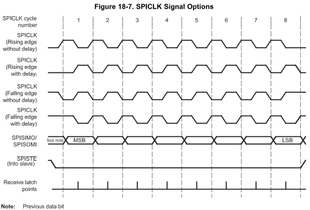
| Polarity | Phase |
|---|---|
| 0 | 0 |
| 0 | 1 |
| 1 | 0 |
| 1 | 1 |
Lecture notes
This slide steps back from the IMU code to the SPI clock itself. On the left is a table of the four combinations of clock polarity and clock phase: polarity 0 with phase 0, polarity 0 with phase 1, polarity 1 with phase 0, and polarity 1 with phase 1. On the right is Figure 18-7, "SPICLK Signal Options," from the TI F28379D reference manual. It shows an 8-bit transfer, cycles 1 through 8, with four clock waveforms stacked in the same order as the table rows.
Polarity 0, phase 0 is "rising edge without delay": the clock idles low and rises at the start of each cycle. Polarity 0, phase 1 is "rising edge with delay": it idles low and rises half a cycle later, in the middle of each cycle. Polarity 1, phase 0 is "falling edge without delay": it idles high and falls at the start of each cycle. Polarity 1, phase 1 is "falling edge with delay": it idles high and falls mid-cycle.
Below the clocks is the data line, SPISIMO/SPISOMI. Data changes at the cycle boundaries and goes most significant bit first, from the MSB in cycle 1 to the LSB in cycle 8. The note says the value before cycle 1 is the previous data bit. The active-low enable, SPISTE, stays low for the whole byte. The receive latch points sit in the middle of each cycle.
The red box around cycle 1 is the key idea. Polarity sets the idle level of the clock. Phase shifts the clock by half a cycle. The receiver samples at the mid-cycle edge, while the data is stable.
A common mistake is to copy mode numbers from a sensor datasheet straight into TI's bits. TI's naming does not map one-to-one onto the CPOL/CPHA modes used elsewhere, so always compare the waveforms instead. Also, the figure shows 8 bits, but our IMU transfers use 16-bit characters.
On the next slide, use this chart to work out the polarity and phase for the MPU9250 read.
41. IMU (14/14)
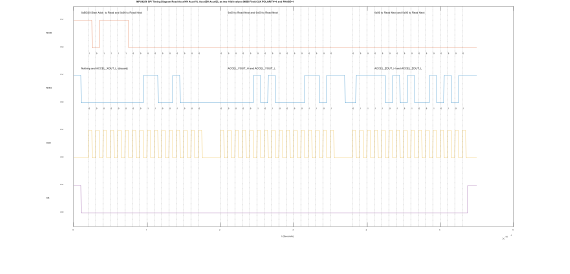
What is the clock polarity?
What is the clock phase?
Lecture notes
This slide shows a real SPI capture of the MPU9250 reading the accelerometer. Its title reads: MPU9250 SPI timing diagram, read AccelYH, AccelYL, AccelZH, AccelZL as two 16-bit values, MSB first, clock polarity 0 and phase 1. Four traces run top to bottom: MOSI, MISO, the clock SCK, and slave select SS. Time runs from 0 to about 6 times 10^-5 seconds. SS goes low for the whole read, roughly 54 microseconds, and the clock gives three bursts of 16 pulses, one per 16-bit transfer. Dashed vertical lines mark the bit times.
This is the code from two slides ago. MOSI first sends 0xBC00, which is the read bit 0x8000 OR'd with start address 0x3C00, and then sends 0x0000 twice to keep reading. On MISO, the first word returns nothing during the address byte, then ACCEL_XOUT_L, which you discard. The second word returns ACCEL_YOUT_H and ACCEL_YOUT_L, and the third returns ACCEL_ZOUT_H and ACCEL_ZOUT_L.
Two red boxes ask you questions. The left box surrounds the clock's resting level and asks: what is the clock polarity? The clock idles low between bursts, so polarity is 0. The right box surrounds the gap between the second and third words and asks: what is the clock phase? Look at MISO. Its first bit is already on the line before the clock starts pulsing. Using the TI modes from the previous slide, that half-cycle head start is phase 1, "with delay."
A common mistake is to assume TI's polarity and phase numbers match the CPOL and CPHA numbers in other datasheets. They do not. Always match the edges in the timing diagram, not the numbers.
42. Questions? (2/2)
Lecture notes
This slide reads "Questions?" in large white text on a dark blue background with faint hand-drawn engineering sketches, the orange Illinois "I" logo, and the footer "Systems Engineering" and "Grainger Engineering."
This is your chance to ask about anything from today's IMU lecture: the accelerometer, gyroscope, magnetometer, or the MPU9250 SPI read. One quick check before you ask: from the last timing diagram, can you say why the clock polarity is 0 and the phase is 1?
43. End of Lecture 12
Lecture notes
This closing slide is the Grainger College of Engineering branding page. The University of Illinois block "I" logo and the words "The Grainger College of Engineering, University of Illinois Urbana-Champaign" sit on an orange background with faint hand-sketched equations and diagrams.
That ends Lecture 12. You covered how the accelerometer, gyroscope and magnetometer each sense motion, how they combine in an IMU, and how the MPU9250 is read over SPI. Before lab, review the SPI timing diagram from slide 41 and confirm that you can identify its clock polarity and clock phase.